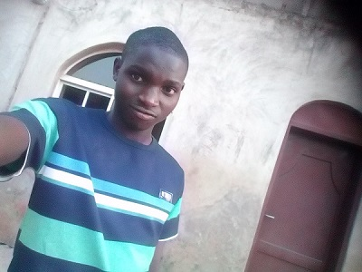

MY EXPERIENCE AT HOME
I experience both good and bad memories at home but i experience the good ones than the bad ones. I have so many challenges at home because i can say that out of all of us in our family, am the only one that go to the best school though i dont drop down their xpectation but the rate that am usinng to study is more than the rate am using for leisure activities and i dont have a day to rest except for Mid Term break only. I usually go to school throughout the mid days and go to Modrasat from Saturday to Wednesday week in week out but i got no choice but to stick with that idea and working hard not to lose form in both places. My senior brothers and sisters are in boarding school so i have to take responsibility of all the house chores at ome because my junior brother is lazy and not that mature to start working yet though he his very lazy. Everyday day at Modrasat is always about work, apart from you working and doing house chores at home, if you get to Modrasat just be expecting much more work even more than the one you engage your self at at home. If you get to Mosque, you will have to heed to all the needs of our Cleric wives and write some verses of Qur'an everyday whivh Yoruba do call Hontu
, at mid days we will have to do some prayers from 7pm to 8pm after closing Modrasat from 4pm to 6:30pm, we dont have time to rest even to do assignment that are assigned for us at school is always difficult to do because we have limited time to do it but that does not mean we shouldnt perform well at school. We were beaten for doing any small mistake despite we working hard every blesses day but they do treat us as if we are lazy bones that didnt want to work but always feel like playing. We didnt feel bemused with all this because it is now part of our blood going through all these activities though we all know to our self that is stressful. Our mothers complain about our sickness but our Fathers didnt agree with them which i can say it hel us and didn't help us. We dont take part in saturdays lesson activities because of Modrasat and we still excel than part of those that are going to lesson.
MY EXPERIENCE AT MODRASAT
 Everyday day at Modrasat is always about work, apart from you working and doing house chores at home, if you get to Modrasat just be expecting much more work even more than the one you engage your self at at home. If you get to Mosque, you will have to heed to all the needs of our Cleric wives and write some verses of Qur'an everyday whivh Yoruba do call
Everyday day at Modrasat is always about work, apart from you working and doing house chores at home, if you get to Modrasat just be expecting much more work even more than the one you engage your self at at home. If you get to Mosque, you will have to heed to all the needs of our Cleric wives and write some verses of Qur'an everyday whivh Yoruba do call Hontu
, at mid days we will have to do some prayers from 7pm to 8pm after closing Modrasat from 4pm to 6:30pm, we dont have time to rest even to do assignment that are assigned for us at school is always difficult to do because we have limited time to do it but that does not mean we shouldnt perform well at school. We were beaten for doing any small mistake despite we working hard every blesses day but they do treat us as if we are lazy bones that didnt want to work but always feel like playing. We didnt feel bemused with all this because it is now part of our blood going through all these activities though we all know to our self that is stressful. Our mothers complain about our sickness but our Fathers didnt agree with them which i can say it hel us and didn't help us. We dont take part in saturdays lesson activities because of Modrasat and we still excel than part of those that are going to lesson. We were beaten for doing any small mistake despite we working hard every blesses day but they do treat us as if we are lazy bones that didnt want to work but always feel like playing. We didnt feel bemused with all this because it is now part of our blood going through all these activities though we all know to our self that is stressful. Our mothers complain about our sickness but our Fathers didnt agree with them which i can say it hel us and didn't help us. We dont take part in saturdays lesson activities because of Modrasat and we still excel than part of those that are going to lesson. We dont take part in saturdays lesson activities because of Modrasat and we still excel than part of those that are going to lesson. We were beaten for doing any small mistake despite we working hard every blesses day but they do treat us as if we are lazy bones that didnt want to work but always feel like playing. We didnt feel bemused with all this because it is now part of our blood going through all these activities though we all know to our self that is stressful. Our mothers complain about our sickness but our Fathers didnt agree with them which i can say it hel us and didn't help us. We dont take part in saturdays lesson activities because of Modrasat and we still excel than part of those that are going to lesson. Our mothers complain about our sickness but our Fathers didnt agree with them which i can say it hel us and didn't help us. We dont take part in saturdays lesson activities because of Modrasat and we still excel than part of those that are going to lesson.
MY EXPERIENCE AFTER SCHOOL LIFE
I have many experience after school life and its quite difficult on how to blend smoothly with it. There are some things you've done at your secondary school and you will be thinking that am i the one that did this stupid thing? but nevertheless Life goes on and we just have to move on with what life brings and and make sure we pass through all the difficulties we are meeting in Life because there are many things i experienced after school life. Should i talk about what happens after my secondary school life or after getting admission in The Polytechnic, Ibadan or about my 1 year I.T. There are many experience have met myself across in my life that i cant mentioned but i have to mentioned some to you because of my readers like you that you are reading me.
I have many experience at hostel during my stay at Unity Hall, i lived with tyrant beings and we are 11 living in a room though the room was assigned to just 4 of us but due to some squatters one of my friends introduce we just have to contnue living though they are joy to live with. All the badd attitude humans do have that they usually exhibit except that they are not cultist, they do not kill and steal but they do smoke, drink alcohol, bet and go to club almost every night. We do shout and argue at each other but we never fight with each other because we are all matured being and i love them all because of the love i have for them, with all their non-challant behaviours they are caring but also lazy to read.
I did my I.T at a scchool in which am busyteaching kids throughout collecting little money but Alhamdulillahi, it is barka that we need most, though i love impacting and helping people in growing their knowledge but i dont want to be a teacher. The place is lovable and caring because they all care and respect me that i complained to them that the resopect they are giving to me is much but they all said one thing which am always happy about is that Teacher Fu'ad you worth more than that but please dont complain about it again.
, the principal and proprietress all loved me and they are very kind to me. The place is a joy to teach because of some students that are very funny, talented and determined. I so much miss them.
After completing my ND1 we are asked to go for SIWES which i have time to learn and open to new thngs about the world and my course particularly. It is very interesting because i did it with most of my friends especially my noble DESMOND and AFEEZ who i can learn more from but what implicate and always pain me most is that i dont have a PC which is still affecting me till date. We learn many things during this period and am able to practice more about my course whcih is always a joy for me when ever i remember because is still beneficial to me though i missed some part of the pperiod which is also painful.